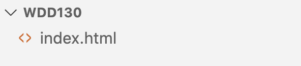
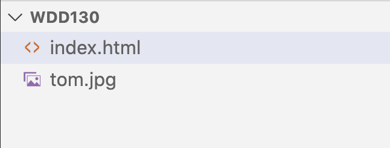
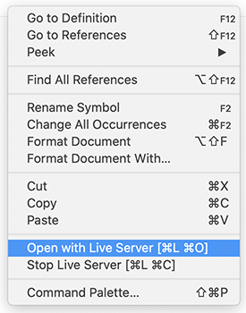
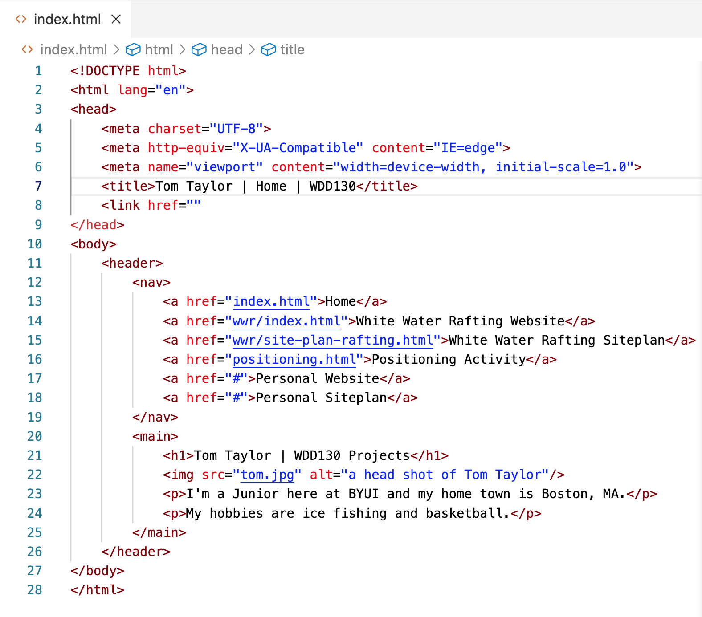
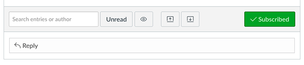
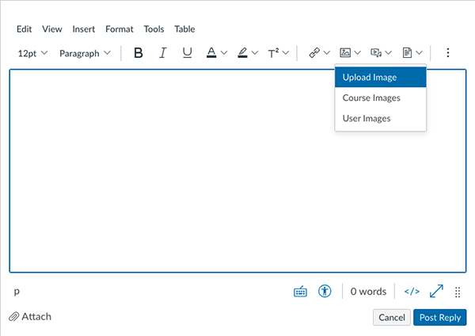

Task: Create a web page using HTML that has links, a picture, and a short biography.
Purpose: Introduce the students to HTML and each other.
Background
This week you will be introduced to HTML. Make sure to read the instructions and their explanations carefully.
Instructions
Estimated Time: 60 minutes
Setup
If you haven’t already, make sure to complete the
instructions in the
Software Setup activity.
Our first HTML
Let's write some HTML. Open VSCode, and make sure you are on the Explorer icon so you can see your folders and files.
We will only be using an index.html file and one image for this activity.
Create a new file within wdd130 and call it index.html

Create an index.html file inside of wdd130
⚠ When naming folders and
files:
Use all lowercase, no capitals and also no spaces.
The editor will open the empty file. Use the shortcut of typing an '!' exclamation mark and then press tab or enter.
HTML to create a basic web page will display.
Inside the head section of HTML, the title tag will show up as the name or tab of the window in the browser. Inside the title tags replace the content with: WDD130 | Home
<title>WDD130 | Home</title>
Everything inside the body tags will show up on the web page.
Let's add a menu or navigation to our page. This should be inside the body tags. Type in the following <nav> and <a> tags with these attributes and content.
Each page should have one <h1> tag with the main headline of the page.
Add the h1 tag with your name.
<h1>Firstname Lastname</h1>
Add an <img> tag so we can see an image of you on your page.
Place an image file of yourself at the same level as index.html.
Put your image right after the <h1> line. You will start
with the <img> tag. Images require additional
information in order to work however. We have to tell the browser
where to find the image. We can use an "attribute" for this. The attribute
we need is src="". Add this right after the word
img. So it will look like this:
The name and path of your image will go into the "" after the
src. Your file name will be whatever you named your image. The final tag should look something like this:
<img src="myphoto.jpg" alt="Image of me">
Notice that I included an extra attribute:
alt. The alt attribute
should contain a short description of the image. It is shown if
the browser can't find the image or it is read for visually
impaired visitors to your site. All of your
images should have an alt attribute. If a tag has
multiple attributes, the order of the attributes does not matter.
Remember that actual .jpg file needs to also be inside the wdd130 folder at the same level as the index.html. You could place it inside an 'images' folder if you'd like, but it will be the only image for this page so it's OK if you leave it at the same level as index.html.

Include an image file inside of wdd130
The image may render really large in the browser. That's OK. We will make it smaller with CSS later.
Then write a brief paragraph or two using opening and closing <p> tags to tell a little bit about yourself. Here is a list of ideas to talk about to get you
started. You don't have to write about all of them. Remember that this will be a public website...so
don't put anything too personal or identifying.
What degree and/or career path are you headed down.
What are some of the things you love to do, hobbies.
Are you married, do you have children, grandchildren...
The advantages you see from learning about careers in web
design, why you are taking the course, what you hope to get
out of it, and how you will use the information in your
personal or professional life.
How long have you been a member of the Church of Jesus Christ
of Latter Day Saints? Do you have a favorite quote from
one of the leaders of the church? Do you have a favorite
scripture?
Anything else you may want to share.
Each time you want a new paragraph (please break it into more than
one paragraph!) Add a new
<p></p> element.
View your work
When you have finished adding your paragraphs you will want to
view your webpage. To do this right-click anywhere in the html file and from the pop-up menu choose 'Open with Live Server' and your default browser will render the html code and show your page as it would be seen on a browser.

Menu when you right-click html file
Your HTML might look something like the image below:

HTML example
Your page might look something like the image below:
Resulting page
Take a screenshot of your page as it looks rendered by the browser (not your HTML code).
If you don't know how to take a screenshot google it or visit: Creating screenshots
Post to the discussion board
Lastly, go to the Getting to Know You discussion board, which is at the bottom of the assignment, and do the
following things:
Click the 'Reply' bar

Reply bar in discussion board
Make a new post.
Upload the screenshot of your page.
Click on the "Upload Image" icon and place your screenshot image in your post.

Upload your Screenshot in discussion
In the group portion of the assignment, view your fellow
student's web pages to get to know those in your class. You're welcome to comment on other posts.